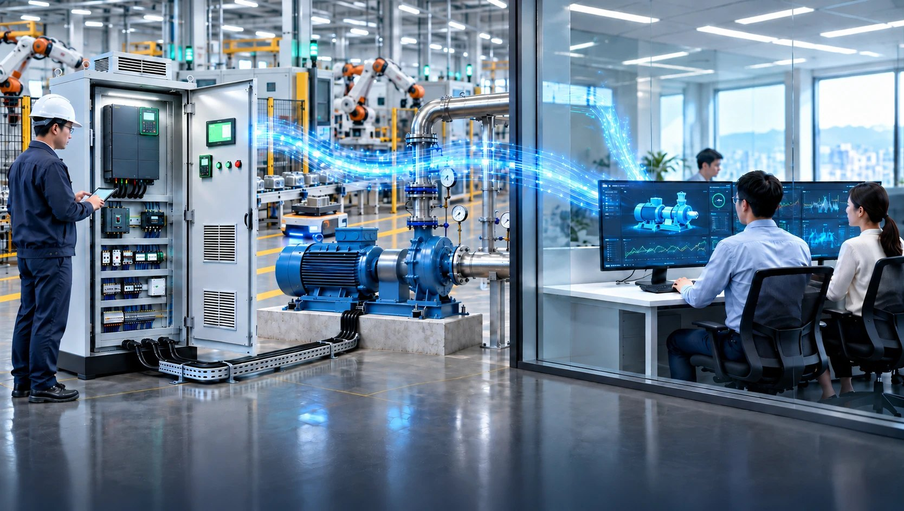

[부산=2026년 10월 2일] 1991년 출발한 스마트제조 솔루션 기업 ㈜동인엔시스(대표이사 백민기)가 자사 '지능형 제어반'을 앞세워 스마트팩토리·MES·AI 솔루션 기업과의 협업을 확대한다고 2일 밝혔다. 스마트팩토리 프로젝트에서 가장 까다로운 구간으로 꼽히는 현장 설비 연동(OT)을 동인엔시스가 전담하고, IT기업은 플랫폼과 서비스에 집중할 수 있도록 하겠다는 전략이다.

스마트팩토리의 병목은 '현장 데이터'
제조 현장의 설비 대부분은 이미 PLC와 인버터로 제어되고 있지만, 그 안에서 만들어지는 운전 데이터는 제어반 밖으로 나오지 못하는 경우가 많다. IT기업 입장에서는 현장마다 다른 PLC 기종과 통신 방식, 데이터 수집용 게이트웨이 설치·유지 부담, 제어반 개조에 따른 전기 안전 책임, 설비마다 제각각인 데이터 형식 등이 프로젝트 지연의 주요 원인이 돼 왔다. AI 분석이나 MES 플랫폼이 준비돼 있어도 정작 연결할 현장 데이터가 확보되지 않으면 사업이 진척되기 어렵다.
제어반 하나로 '제어'와 '데이터 수집'을 동시에
동인엔시스의 지능형 제어반은 PLC로 모터·펌프·송풍기 등 설비를 제어하면서 운전 데이터를 함께 수집하고, 별도 수집장비 없이 클라우드까지 연결한다. 기존의 'PLC–수집 게이트웨이–서버' 구조를 제어반 하나로 줄인 것이다.
수집 항목은 모터 권선온도(U·V·W), 베어링 온도, 회전속도, 전압·전류·전력량, 진동, 대기 온습도, 운전 상태신호 등이다. 데이터는 PLC에서 MQTT 방식으로 전송되고 TLS 암호화로 통신 구간이 보호된다. 클라우드 데이터허브(DataHub)는 설비별 데이터를 '설비–센서–실시간값–상태'의 공통 구조로 정리해 시계열로 저장하며, 고객사와 파트너사의 MES·관제·분석 시스템이 연동할 수 있도록 REST API와 WebSocket 방식으로 제공한다. 설비와 센서가 늘어나도 같은 데이터 구조가 유지돼 연동 코드를 다시 만들 필요가 없다는 설명이다.
설비 안전 측면에서는 인터록과 최종 제어 권한을 현장 PLC가 그대로 보유하고, 서버는 설비를 직접 제어하지 않도록 설계했다.
IT기업과의 세 가지 협업 모델
동인엔시스는 IT기업과의 협업 방식을 세 가지로 제시했다.
▲OT 구간 전담은 IT기업이 수행하는 프로젝트에서 제어반 설계·제작·설치, PLC·인버터·센서 연동, 현장 시운전과 유지보수를 동인엔시스가 맡는 방식이다. ▲데이터 연동은 지능형 제어반이 수집한 설비 데이터를 표준 API로 파트너 플랫폼에 제공해 MES·AI·디지털트윈에 바로 연결하는 방식이다. ▲공동 제안·영업은 제조 고객과 정부 지원사업을 함께 발굴하고, 시연 장비를 활용해 공동으로 제안·수행하는 방식이다.
협업은 '협업 문의 → 기술 미팅(연동 범위·역할 분담 협의, 필요 시 NDA) → 시연 장비와 테스트 데이터를 활용한 연동 검증 → 고객 현장 공동 적용' 순으로 진행된다. 파트너사는 실제 현장 적용에 앞서 시연 장비로 자사 플랫폼과의 연동을 먼저 검증할 수 있다.
동인엔시스는 스마트공장 공급기업으로 등록돼 있어, 제조기업이 정부 스마트공장 지원사업을 활용해 지능형 제어반을 도입하는 경우에도 IT기업과 함께 대응할 수 있다. 현장 분석부터 제어반 제작, 클라우드 구성, 시운전까지 표준 구축 기간은 9~15주이며, 현장 조건에 따라 달라질 수 있다.
35년 제어반 제작 경험이 기반
1991년 동인기전으로 출발한 동인엔시스는 산업·선박 현장의 제어반을 직접 설계·제작해 온 OT 엔지니어링 기업으로, 지금까지 750건 이상의 프로젝트를 수행했다. 양산 1·2공장과 기장공장에서 제어반을 직접 제작하고 PLC·인버터 프로그램과 시운전까지 자체 수행한다. 액화수소충전소 제어시스템, 대형 조선소 FGSS 시험설비, 친환경 선박 전기추진 제어 등 안전 기준이 높은 현장에서 기술력을 검증받았으며, Schneider Electric 공식 SI 파트너이자 ABB·Fuji Electric·Eaton·Danfoss의 공급 파트너다.
올해 산업통상자원부 '혁신프리미어 1000'에 선정됐고, 수소전문기업 등록과 액화수소충전소 제어시스템 관련 특허 5건 등록 등의 성과를 냈다. 이노비즈·메인비즈·벤처기업 인증과 ISO 9001·14001·45001 경영시스템 인증도 보유하고 있다.
동인엔시스 백민기 대표이사는 "AI와 스마트팩토리가 제 역할을 하려면 현장 설비의 데이터가 먼저 필요하다"며 "동인엔시스는 PLC와 클라우드를 가장 쉽고 안전하게 연결하는 일에 집중하고, SCADA·MES·AI 플랫폼은 파트너 기업의 솔루션을 그대로 활용하는 방식으로 IT기업과 함께 제조 현장의 DX·AX를 앞당기겠다"고 말했다.
협업 문의는 동인엔시스 홈페이지(donginensis.com/partner)의 '협업 제안 요청' 또는 전화(051-862-3668)로 할 수 있다.
회사 개요
| 회사명 | ㈜동인엔시스 (DONG-IN ENSIS CO., LTD.) |
|---|---|
| 대표이사 | 백민기 |
| 설립 | 1991년 10월 (법인 전환 1997년 7월, 2023년 ㈜동인기전에서 사명 변경) |
| 주요 사업 | 지능형 제어반, 산업용·선박용 제어시스템 설계·제작, 시스템 통합, 글로벌 전력·제어 제품 공급 |
| 본사 | 부산광역시 부산진구 진연로9번길 47 |
| 홈페이지 | www.donginensis.com |